Author: Wolf Posdorfer
To fully configure your default.properties file you can follow this small guide.
The default.properties are located at:
In your source folder under src/main/resources/default.properties
By editing the spark.jar in your installation folder. Go to C:/Programs/Spark/lib/spark.jar and open it with any Archive-program (like 7z).
Then navigate to spark.jar/org/jivesoftware/resource/default.properties
Now you will have to open it with any text editor, modify it and save it. If you're using method b, your archive-program will ask you to repack, please do so. You can then copy this file into any other installation of Spark. You should note that spark.jar will be overwritten with a subsequent Spark upgrade and all custom settings will be lost. So one should edit spark.jar and redistribute it to all the clients after every new Spark version release.
Items crossed with red markers are Items that become invisible or disabled when setting a specific option.
# Specify a fixed Hostname # Changing the Hostname will also be prohibited if set HOST_NAME = example.com
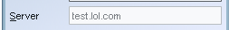
# Proxy Settings # Protocols are "SOCKS" or "HTTP", case sensitive PROXY_PROTOCOL = SOCKS PROXY_HOST = myProxy.com PROXY_PORT = 8080
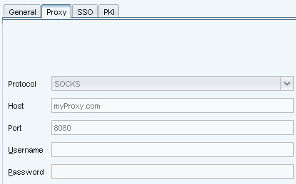
# Remove account creation Button from Loginwindow # Users wont be able to register new Accounts from within Spark ACCOUNT_DISABLED = true # Remove Advanced Configuration Button from Loginwindow # Users wont be able to access the advanced configuration ADVANCED_DISABLED = true
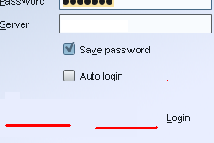
# Branding only # Branded images appear in the Top-Right corner, and must be included in the classpath # place them in src/resource/images and path will be "images/file.jpg" # BRANDED_IMAGE = images/my-corporation-logo.png BRANDED_IMAGE = images/colors.png
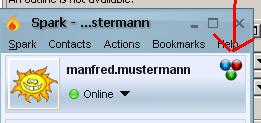
# Disables updateability, you should set this, if you have a custom Spark-build # or are in an environment where installfiles are distributed via network DISABLE_UPDATES = true
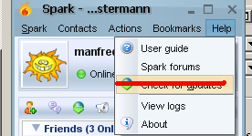
# If true, Spark cannot shut down # users wont be able to shut down Spark DISABLE_EXIT = true
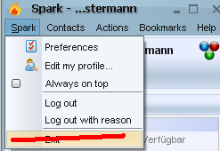
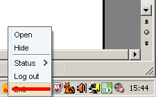
# Specify a size(in bytes) on which Users will get a warning of a possibly too big file FILE_TRANSFER_WARNING_SIZE = 1024 FILE_TRANSFER_MAXIMUM_SIZE = 10048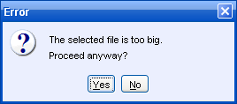
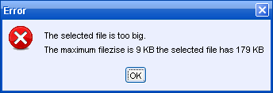
# Disables adding of contacts # The User wont be able to add contacts, usefull for shared roster management ADD_CONTACT_DISABLED = true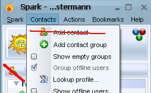
# Disables adding contact groups # The User wont be able to add contact groups, usefull for shared roster management ADD_CONTACT_GROUP_DISABLED = true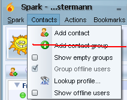
# Sets the Location of the Userguide HELP_USER_GUIDE = https://igniterealtime.org/builds/spark/docs/spark_user_guide.pdf # Set to true, if you dont want this displayed HELP_USER_GUIDE_DISABLED = # Sets the Location of the Help-Forum HELP_FORUM = https://discourse.igniterealtime.org/c/spark/spark-support?forumID=49 # Set to true, if you dont want this displayed HELP_FORUM_DISABLED = # Following Text will be displayed instead of "Spark forum" # leave blank for default HELP_FORUM_TEXT = My Own Forum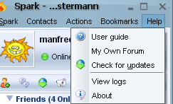
# Disable Installing of Plugins # set true if you want to disable installing of Plugins INSTALL_PLUGINS_DISABLED = true # Disable deleting of Plugins # set true if you want to disable deinstalling of Plugins DEINSTALL_PLUGINS_DISABLED = true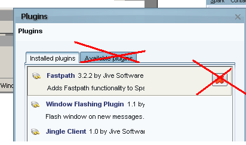
# Put plugins here that you dont want enabled # comma separated, case insensitive # names of plugins can be found in the plugin.xml # example: Fastpath,Jingle Client,Phone Client,Window Flashing Plugin # default is empty PLUGIN_BLACKLIST = Fastpath # Disable Plugins by entrypoint Class # Comma separated, case sensitive # example org.jivesoftware.fastpath.FastpathPlugin PLUGIN_BLACKLIST_CLASS = org.jivesoftware.spark.translator.TranslatorPluginThis will disable all Plugins with <name>Fastpath</name> and all plugins with <class>org.jivesoftware.spark.translator.TranslatorPlugin</class>
The appropriate Names or Classes can be found in the plugin.xml within the plugin.jar
# by Default Server-Broadcast get their own JFrame containing the Message # also HTML tags like <b> <i> <u> can be used # if you want server broadcasts handled like every other message including transcripts # set this to true BROADCAST_IN_CHATWINDOW = true BROADCAST_IN_CHATWINDOW = false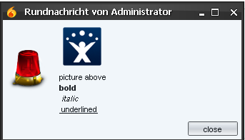
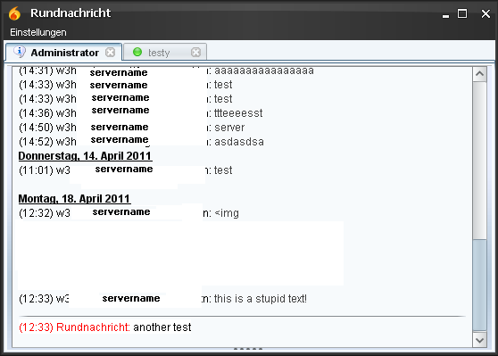
# Disable Look&Feel change || "true" = disabled , anything else = enabled # By Default the user can Change his Look&Feel in the Preferences Menu, #if you dont want this then set it to true # Preferences -> Appearence -> Customization Tab LOOK_AND_FEEL_DISABLED = true # Disable if you dont want Users to be able to Change the Textcolors in the Preference Menu # the colors will be loaded from below # Preferences -> Appearence -> ColorTab CHANGE_COLORS_DISABLED = true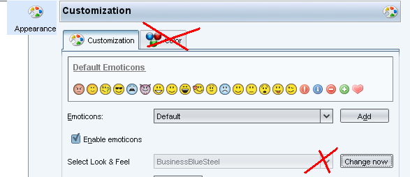
# Changes the Default Look&Feel DEFAULT_LOOK_AND_FEEL = org.jivesoftware.spark.ui.themes.lafs.SparkLightLaf # Default Spark skin for Mac is empty. This will load the OSX Look&Feel DEFAULT_LOOK_AND_FEEL_MAC =Look and Feels are: